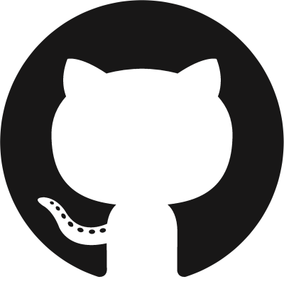

パラグアイ出身の日系人。ペラペラと日本語で話しているが、スペイン語はそんなにわかっていない。 高校時代にはプログラミング言語を少し勉強していたが、最近は3Dの分野に興味があり、 スキマ時間にはモデリングを主に練習している。 基本的に雑食で、分野問わず気になったものには手を出したいと思っていて、 大体それでいつも時間が潰れていく。他にも色んな趣味を嗜んでいて、(時間に) 余裕がない生活を送っている。
Languages
Learning Languages
- C++
- HTML, CSS
- JavaScript
色々やっているが、全体的なレベルは低いので要勉強。アルゴリズムも習得したい。
Interested Languages
- C#
- Python
- Go
Illust
- 基本的に厚塗り。
- 人並み以上ではあると思うが、未だ趣味の範囲。レベルを上げて、個人制作などで役立てたい。
- 過去作品は、Linksタブにて閲覧できるのでぜひ。
3D
- Blender, Unity
- Blenderでフルスクラッチモデルを造り、Unityで使用する予定。
- 将来的には映像作品や3Dゲームなどを制作するつもりで、一番力を入れて習得していきたい分野である。
- VR機器を揃えたらVRにも手を出す予定。
作品鑑賞
- 好きなYoutuber, VTuber, VLiverの動画
- アニメ
- ラノベ
- 漫画
- 好きなバンドの音楽(amazarashi)
ゲーム
- 主にFPS / TPS系(CSGO, Fortnite, etc.)
- 面白そうと思ったものは(資金があれば)遊ぶ。
- 週末にはAtCoderとかにも参加している。(灰)
- ゲーム用アカウントなどはLinksタブにて閲覧可能。
Twitter Account
大抵の場合ここにしかいないので、反応はここが一番早い。
GitHub Account

何となく用途は分かるのだが、全然使いこなせていない。
Pixiv Account
描いたイラストの大半はここに載せてる。
Steam Account
最近は全然遊べてないけど、誰か誘ってくれるなら暇な時にでも。